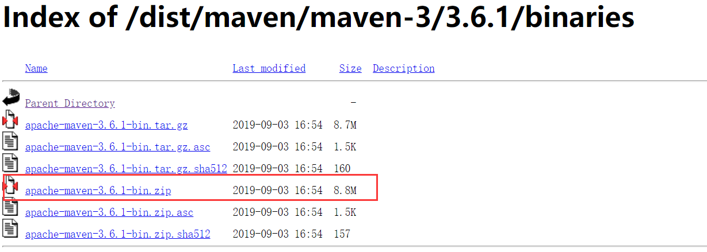
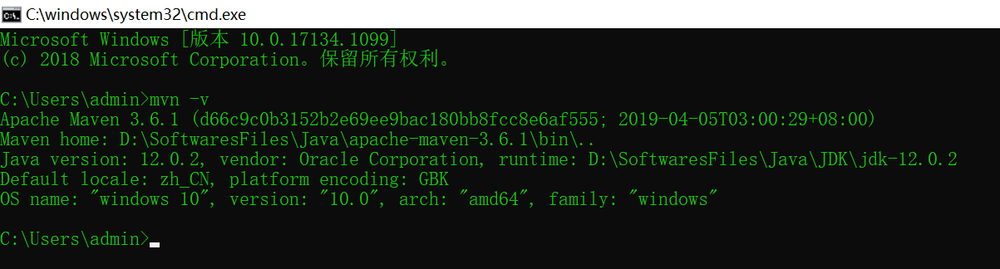
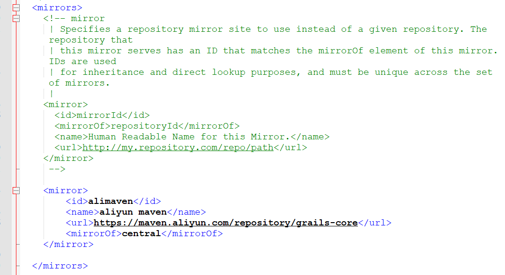
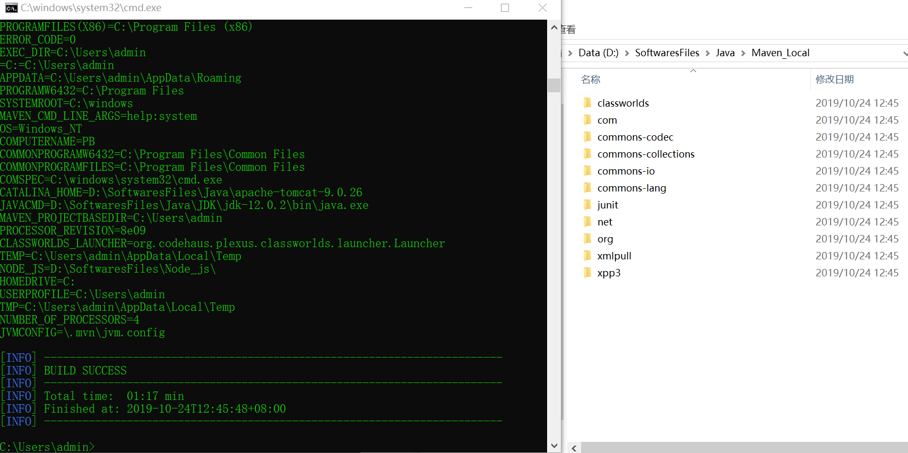
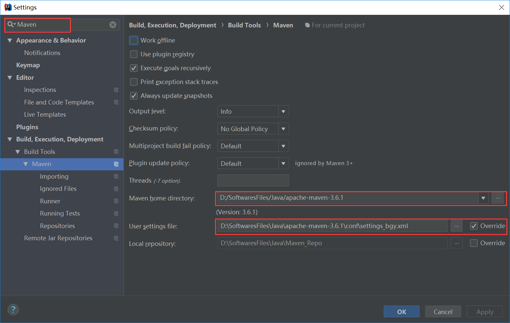

一、Windows安装Maven
1、下载Maven
这里需要注意：不要去官网下载最新的版本，因为会出现与IDEA不兼容的现象。
这里提供下载地址：https://archive.apache.org/dist/maven/maven-3/
由于现在最新的是3.6.2，所以这里我下载它之前的一个版本3.6.1，选择bin.zip文件下载即可。

*******下载完后解压到本地，可以存放到任意目录 (最好不要放在C盘，然后要养成不起中文路径的好习惯)*********
2、设置系统的环境变量
（1）新建环境变量MAVEN_HOME，赋值刚才解压后存放的根目录；
（2）然后编辑环境变量Path，点击“新建”，然后添加：%MAVEN_HOME%\bin;
（3）至此，maven已经完成了安装，可以通过DOS命令检查一下我们是否安装成功。
打开命令提示符（cmd），输入：mvn -v，显示下面结果，表示maven已经安装成功。

3、配置本地仓库
maven解压后，可以修改maven中的配置文件，由于默认的maven仓库是指向到C盘的，因为每次我们引用一个新的依赖，就会将依赖包，
下载到我们本地maven指向的位置，所以如果有需要，可以修改为自己想存放的位置。
（1）打开maven根目录下的conf文件夹，然后编辑里面的settings.xml文件。
首先创建一个空文件夹，用作Maven的本地仓库，这样以后的所有的依赖都会存储到这个仓库里。
然后在配置文件settings.xml文件里添加如下代码，指定本地仓库的位置。
<!-- 下面是自己设置的本地仓库位置 -->
<localRepository>D:\SoftwaresFiles\Java\Maven_Local</localRepository>
（2）接着添加Maven的依赖下载镜像，这里用阿里云镜像。
（注意：阿里云镜像地址跟以往的下载地址不一样，所以要更改下载的路径，否则不成功）
<mirror>
<id>alimaven</id>
<name>aliyun maven</name>
<url>https://maven.aliyun.com/repository/grails-core</url>
<mirrorOf>central</mirrorOf>
</mirror>
查看效果如下：

（3）添加完后，保存settings.xml，然后重新打开命令提示符（cmd），输入：mvn help:system

*********出现以上页面，表示配置成功。（如果失败，很有可能是因为网络问题，重新打开cmd再操作一次即可。）**********
二、IDEA里配置Maven
打开IDEA，点击File->Settings，在搜索栏里输入Maven；
然后修改Maven home directory: D:\SoftwaresFiles\Java\apache-maven-3.6.1（改为你解压后的Maven根目录地址）
接着修改 User settings file: D:\SoftwaresFiles\Java\apache-maven-3.6.1\conf\settings.xml （改为你配置文件settings.xml的地址）
Local repository 会被自动识别为 D:\WorkSpace\MavenRepository

**********这样，IDEA中的maven就准备好了，此时是使用本地库以及阿里云的镜像**********
**********以后项目中在使用Maven时，会自动下载jar到本地仓库**********